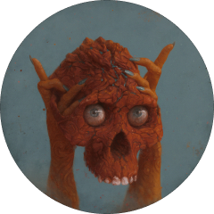
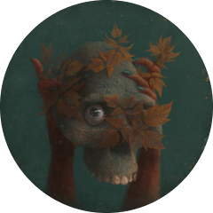
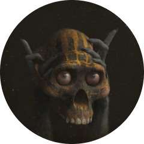

The Game
The Monument Game is built like a campfire. The 1/1 serves as the flame: the object of attention, the
brightest light where stories and lore are told-where energy is spent and generated. The Skulls of
Luci and The Council represent the objects of desire: the people and leaders gathered around the
light, sharing their stories with each other-creating a force when bonded, to hold the light and draw
in others from the dark. And now a widened circle of people through the edition/ticket, the 256
Players, who will be pointing all of their energy, attention, and observations at the 1/1: the fire,
competing as storytellers for the 3 seats closer to the flame… should The Council vote them in.
This game rewards curiosity and creative thinking, asking people to create the final varnish to a
digital painting. A coat of chaotic and unpredictable communal resin made from an offering of people's
thoughts: a little piece of themselves-bonding all collectors to their edition, all editions to the
1/1, with the Skulls forming the energy circuit between them. A record not just of the origin point
and destination for a piece of digital artwork, but of collective reflection and competition-linking
The Monument Game, The Skulls of Luci, and the players together in a connected system of story,
community, and play. I have made a little world. An extraction of what I see. Supposedly, we are all
looking at the same one, but perhaps the only thing that could ever make it different is you. To play
The Monument Game is to give a piece of yourself to the painting. The chaos variable of storytelling
is how your own life has altered how you see.
Welcome to The Monument Game. The game has 4 main pillars:
The 4 Pillars Of The Monument Game
1. The Game: An interactive competition
where holders of The Ticket: "Player" can explore, Observe, and compete by leaving Observations atop
the 1/1 painting "IX. The Monument Game".
2. The Painting: A massive and detailed 1/1 artwork on auction
filled with hundreds of stories titled "IX. The Monument Game".
3. The Ticket: My first editioned work titled "Player" (Edition
Size: 256). Each ticket of "Player" begins as an entry to compete for The Reward by leaving a written
Observation of what the collector finds atop the 1/1 "IX. The Monument Game." At the close of The game
and auction, all tickets with corresponding Observations are minted as editions of "Player." Their
Observations will be voted on by The Council of Luci.
4. The Reward: The Council of Luci (a cadre of my closest collectors
and some of the best people in this space) will collectively serve as the voting body to decide the 3
most observant Players to win The Monument Game. The 3 winners will be able to sacrifice their
"Player" edition with its winning Observation for a seat on The Council by claiming 1 of the 3
remaining Skulls of Luci.
The Reward
"The Skulls of Luci"
1 / 1 of 50
Together, The 50 Skulls of Luci and The Blueprint Skull were my first experiment: a collection created
as gifts for bids placed on my entry into the space. Energy given as offers stacked into each other
on-chain, converted with gratitude and sent back to be claimed as paintings-their story existing as much
outside the imagery in the bonds formed between myself and its members, as within the work itself. Each
Skull grants its holder a place on The Council of Luci: a group of the best collectors, artists,
builders, and human beings in Web3.
Mountains From Collisions
Autumnal Opening
Mark of the Father
The Council of Luci Deliberations
The game ends with a selection process by The Council of Luci, where they will
evaluate each Observation and select the 3 top winners who will receive the opportunity to trade their
edition with me for a Skull of Luci across 2 rounds of deliberation.
Round 1: In the first round, all participating Council members will
choose their top Observation, and any Observation that receives at least one vote from a Council member
will be highlighted as a finalist on The Monument Game viewer and secondary market.
Round 2: In the second round of deliberation, selection is limited to
the finalists, and each Council member will vote to decide the winning 3 observations by voting on their
top 3 Observations in ranked choice order.
There is no "correct" or "right" observation; the winners will be chosen based on the impression left
on each Council of Luci member through the selection process; consensus will reveal which Players played
the Game best.
Special Thanks From Sam
To stumble into common knowledge like it's a new discovery is a child-like and
awe-inspiring experience, we need only not let the shame get to us once we realize just how common the
knowledge is and how many tried to show the way before we got there. Turns out, life is groaningly far
better together. I spent my own life largely alone painting in a small room, and creating this story and
world with Luci has connected me to others in a way that I never thought possible. The more I connect,
the more real or at the very least: convincing, reality becomes. The Monument Game and Player took
nearly a year to sketch, write, build, reference, research, sculpt, and paint to create the artwork on
my end, but if you look at it and think "Sam made this" I am flattered by the mythology, but never in my
life has this been more of a myth. I made something with people and they are of extreme importance for
me not just for this project but for the lasting imprint each of them has had.
You are on Nifty Gateway, and you are on it in a way that whether this is your first time here or your
thousandth, it is in a state it has never been. This changed state is a gift birthed from open people
connecting my system to theirs. I brought this idea of The Monument Game to Duncan Cock Foster nearly a
year ago. I told him "This is not a drop or a mechanic, I want to build my own sub-platform, image
viewer, system, and secondary market within your site for a single project to incentivize curiosity in
art and I will need a team to pull it off." As his last dying act at Nifty before fading off into the
sunset to "be a founder again" he agreed and greenlit the project.
Suddenly I had a team. A cadre of people now helping to breathe life into a small idea I couldn't
alone, in order to make art that doesn't rest under or within an image, but in layers of chaos and
commune above it. In the months since, I have been having weekly meetings with some of the kindest, most
thoughtful, talented, and thoroughly inspiring people I have ever worked with. Who, with each of their
own skills in front end, back end, and protocol development and code, through marketing, UI/UX, market
mechanics and relationships, have helped to make this idea better than real. Not just a realized
singular artistic vision executed on by others, but something opened and honed into something far better
than that: one forged through the mental sparring, generosity of interpretation, and the desire to
create to find a creation's best state among many-where my blindspots are looked out for and wildest
ideas are solved for and met with energy and curiosity.
This work and the system it is connected to was made possible by risky decision making, resources and
time, creativity, and though you may be on a website with the company name "Nifty" and the connotations
this comes with. Do not let this abstraction fool you from knowing that it is very much created by
beautiful people who want to make something together. To Chrisly for leading in every sense of the word:
you angel, thank you. To Alex, Aabhira, Bob, Ashlin, Lam(bo), Ricky, Trevor, Aaron, and Stormi. I cannot
thank you enough for the hard work, creativity, and passion each of you brought into every meeting. You
are all warm faces and voices I looked forward to hearing from every week, and can feel each of your
finger prints in the movement of this project. To Tara, Eddie, Javo, Matthew, Ben, Cindy, Eric, Rose,
Buddy and Jake thank you for soldiering and executing in the background. My observation: I am honored to
have had even one drop of any of your talents pointed in this direction, to have them all and to be
proud of the result is a dream made real. Imagery is only one very small part of creating art, it is not
found in a brushstroke or an output, it is in the primordial soup we swim in, something very real but at
times feels intangible. In my mind the future of art is the future of everything: making the intangible
and immeasurable-the systems connecting us-made real. Code, brush, humanity to help us feel a shared
reality. Thank you for making this piece of art with me.
To my home team of The House of Luci: Rachel, my beautiful and inspiring wife who holds my mind
together in order to move through this world and who has wrangled this beast of an operation into order,
you are a goddess and cannot thank you enough for climbing up this tree with me. To Alex, for helping me
take every bit of Luci and make it more real than I ever could alone. Your hard work has meant
everything, and cannot wait to take everything we have learned and build the future of Luci with you. A
massive thank you to my friends Joey, Zach, Owen, Tom, Benny, Victor, Coz, Vince, Ryan, and the entire
Council of Luci for being ears, eyes, and hands to help hone this into its final form.
Thank you,
Sam